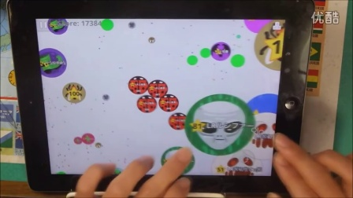

You already know how to play Agar.io. You know the basics: eat pellets, grow, avoid bigger cells, chase smaller ones. That's not what this guide is about. This is for players who want to actually compete — the split tricks, the micro-decisions, the late-game strategy that separates someone on the leaderboard from someone dominating it. If you're still figuring out the fundamentals, start with our Agar.io Beginner's Guide first. This is next level.
✂️ Split Mechanics & Tricks

The Split Fundamentals
Splitting is when you press Spacebar and your cell divides into multiple smaller cells. Each split cell is half your original mass (minus a small decay penalty). This is the most important mechanic in Agar.io beyond basic movement, and mastering it separates good players from great ones.
The Feed Split
The most basic advanced technique: drop small pellets of mass behind you while splitting toward food. You split, the smaller cell moves forward to eat food, your main cell trails behind carrying the mass back. It's slower but safer — you don't expose your full mass to predators.
The Pop Split (Aggressive)
Split off a small cell and launch it aggressively at a target to absorb them before they can react. This works best when you're significantly larger than your target. The small cell moves faster (smaller cells are quicker) and can catch players who think they're safe. Risk: you're sending mass into uncertain territory. Don't pop split with more than 25% of your total mass.
The Chain Split
Split multiple times in rapid succession to create a chain of small cells that rapidly consumes everything in their path. This is how you dominate a pellet field quickly. The key is timing — each split must come at the right moment so cells don't collide with each other. Practice this in solo mode until it feels natural.
The Reverse Split
This is the reverse of the pop split: absorb mass by splitting a tiny cell off, letting it drift toward food, then letting it rejoin. It's useful when you're too large to chase food effectively. The small cell is nimble and can navigate into tight spaces, then carry mass back to your main body when it rejoins.
After splitting, there's a brief cooldown before your cells can rejoin. Sending too many cells out simultaneously leaves you fragmented and vulnerable. Never split more times than you can manage — 4 splits is usually the practical maximum in active combat.
🎯 Micro-Techniques

Mass Dropping
You can eject mass using your W key or Shift key (depends on the server). Dropping mass is great for baiting predators — drop a chunk, watch them come for it, then split and devour them when they get close. It also lets you shrink to fit through narrow spaces.
The 8-Cell Wall
When you're very large, split into 8 cells and spread them across an area to create a virtual wall. Anything smaller that touches your wall gets absorbed. This is a passive domination technique — you don't need to chase anyone, you just wait for them to swim into you. Works really well in late game.
Zoom Level Management
Scroll to zoom in and out. Always zoom out when you're large so you can see threats coming. Zoom in when you're small and hunting, to precisely navigate toward food. Constantly adjusting your zoom level based on your current size is a habit pro players never break.
Speed Calculation
Your speed is inversely proportional to your mass. The formula varies by server, but here's the thing: smaller cells are just faster. A cell with 100 mass moves way faster than one with 10,000 mass. This means chasing at equal sizes is pointless — one player needs to be at least 20% larger to consistently outpace the other. Factor this into every engagement decision.
🏆 Late Game Strategy

When to Consolidate
After a certain size, splitting becomes a liability. You move too slowly, your cells are too large to maneuver through anything, and you're an obvious target. When you reach late-game mass, the strategy flips: stop splitting, stay together, and use mass to dominate your space. Let smaller players come to you.
The Blob Strategy
Late-game masters keep their mass in one tight blob rather than spreading out. A single massive cell is way harder to eat (you can't get behind it), moves with purpose, and is intimidating. Players see a massive blob and give you a wide berth. I found that using this psychological effect helps control territory without fighting.
Map Control
Late game is about controlling zones rather than chasing individual pellets. Pick an area with good food density and push all competitors out. Once you've established dominance over a zone, you can grow passively while smaller players fight over scraps elsewhere. The player who controls the best food zone in late game typically wins.
Watching the Minimap
In late game, the minimap is your best friend. You're too large to chase threats across the map, but you need to know where threats are. Check it constantly. If a massive rival appears on your minimap, decide: can you eat them? If not, reposition. Don't let another massive blob catch you in a bad position.
🦈 Predator & Prey Tactics

Hunting as a Predator
When you're larger than nearby players, your strategy is simple: cut off escape routes. Position your cell between the prey and the nearest safe zone. Then split and consume. Don't give chase — use geometry and positioning to make eating them inevitable. A good hunter is patient.
Evading as Prey
When something bigger is chasing you: find obstacles. Viruses, pellets, and map boundaries all interrupt pursuit because predators have to navigate around them too. Use these to create distance. Also: don't run in straight lines. Predictable movement is easy to intercept. Vary your direction constantly.
The Virus Trap
Viruses can be used offensively. If you're smaller than an attacker, position yourself near a virus and force them to either eat you (and get blown up by the virus) or leave you alone. Experienced players know this trick — watch how other skilled players react to viruses near larger threats.
The W Key Bait
Drop mass with W, watch a predator chase the dropped mass, then split and devour them when they're committed. This is one of the oldest tricks in Agar.io and it still works constantly because predators are greedy. The bait works best when the predator is just slightly larger than you — if they're twice your size, the math doesn't work.
📍 Advanced Positioning

The Center vs. Edge Debate
Large players typically gravitate toward the center of the map where food density is highest. But the center is also the most dangerous — everyone can reach you, and you'll be surrounded. Some players prefer holding the edges, controlling a quieter zone with less competition. Neither is universally better; it depends on your size and comfort with pressure.
Using Viruses as Shields
Position viruses between yourself and threats. A virus blocks both your movement and theirs. Use this to create barriers that larger players can't cross easily. It's especially useful when you're medium-sized — large enough to be a threat, small enough to navigate through gaps.
Corner Control
The corners of the map have natural wall protection on two sides — you can't be flanked from behind. If you're being pursued and can reach a corner, position yourself so the wall is at your back and the threat is in front. Now you only have one direction to defend, and your enemy has to commit to a direct approach.
💡 Pro Tips

- Stop watching yourself. When you're large, zoom out and watch the whole arena. Your cell's position matters less than knowing where every threat and food cluster is.
- Play like water. Agar.io's cells move smoothly and organically. Don't make sharp, jerky movements. Flow toward targets and away from threats.
- Learn server patterns. Different Agar.io servers have different rules, speeds, and mechanics. Master one server before spreading yourself thin across multiple.
- The ego check. If you're on the leaderboard, you're a target. Stay large but not absurdly large. Let someone else hold first place while you accumulate safely.
- Use private servers to practice. Public servers are chaotic. Private servers with friends or solo mode let you practice split tricks and mechanics without constant interruptions.
❓ Frequently Asked Questions

Q: What's the fastest way to grow in Agar.io?
A: The fastest method is a combination of smart positioning (staying in high-density food zones), strategic splitting (to cover more area quickly), and opportunistic predation on smaller players. Mass from dead players' cells is the biggest growth accelerator.
Q: What's the difference between pop splitting and chain splitting?
A: Pop splitting involves launching a small cell aggressively at a target. Chain splitting involves multiple rapid splits to create several small cells that sweep through a food area. Pop splitting is for combat; chain splitting is for rapid food collection.
Q: How do I escape a player twice my size?
A: You likely can't outrun them in a straight line. Your options are: navigate through tight spaces where their size is a liability, use viruses as obstacles, reach the map boundary to reduce their approach angles, or split aggressively to increase your number of moving cells and unpredictability.
Q: Is Agar.io still active in 2024?
A: Yes, Agar.io remains one of the most popular .io games with active servers and a large player base. Multiple official and community servers are available.
Q: How does the zoom feature affect gameplay?
A: Zooming out lets you see more of the map, which is crucial for large cells that need to monitor threats. Zooming in provides better precision for small cells navigating toward food. Adjust your zoom constantly based on your current size and goals.
Q: What are the best Agar.io private server settings for practicing?
A: Look for servers with slower decay rates (so mass lasts longer), moderate player counts (not empty, not chaos), and standard split mechanics. This gives you the best environment to practice advanced techniques.
Q: How do I know when to stop splitting?
A: Stop splitting when: you're large enough that your small cells can't maneuver effectively, you're in a dangerous area with unpredictable threats, or you've fragmented so many times that rejoining takes too long and leaves you exposed.
Q: Can I play Agar.io competitively?
A: While Agar.io isn't a formal competitive game with tournaments, many players treat it as a skill-based hobby. Compete on private servers with friends, set personal bests for leaderboard positions, or join communities that organize Agar.io challenges for a more structured competitive experience.
Agar.io rewards deep understanding of its mechanics. The basics are simple; the mastery runs deep. Split smart, position better, survive longer, and the leaderboard will sort itself out. Good luck out there.